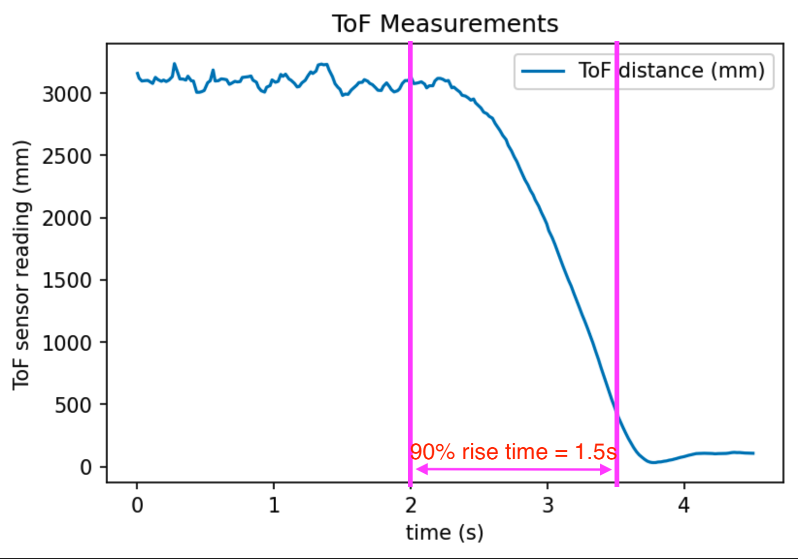
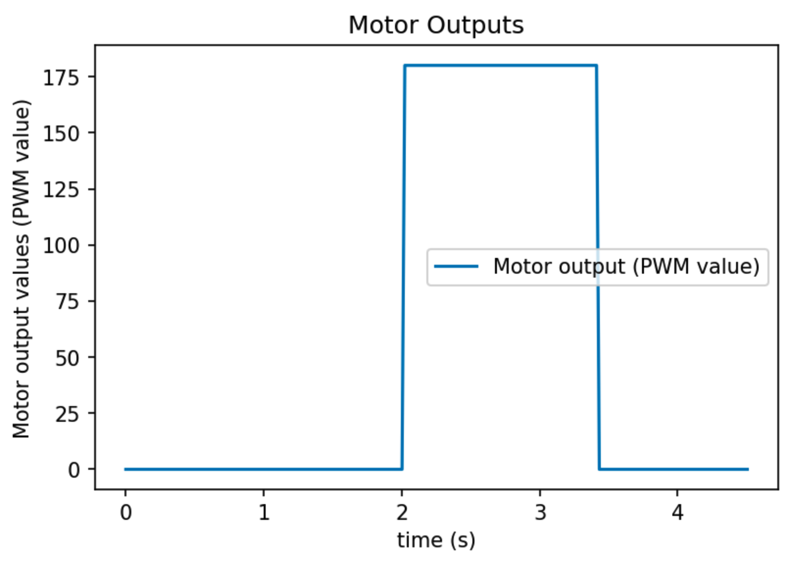
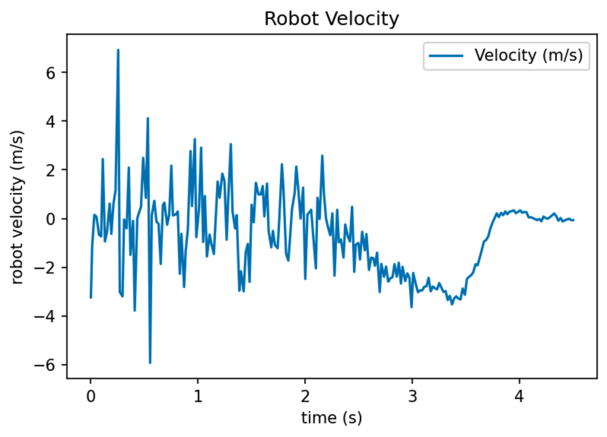

Intro paragraph.
Step response to find steady state speed and 90% rise time
Robot running towards a wall while measuring ToF sensor readings.  ToF sensor readings as the robot runs toward the wall.  Step motor output (PWM=180) as a function of time.  Velocity extracted from ToF sensor readings. Velocity zoomed-in to time = [2.5, 4.5] seconds range.
Velocity zoomed-in to time = [2.5, 4.5] seconds range.